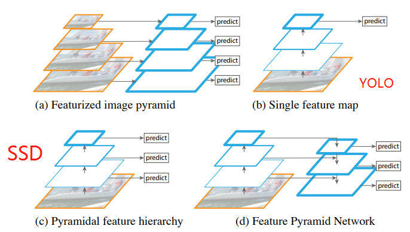
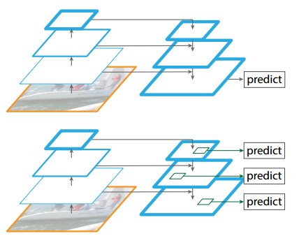
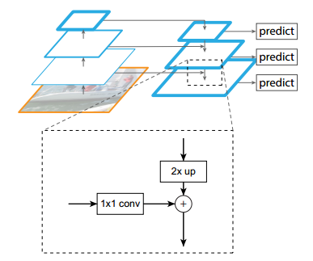
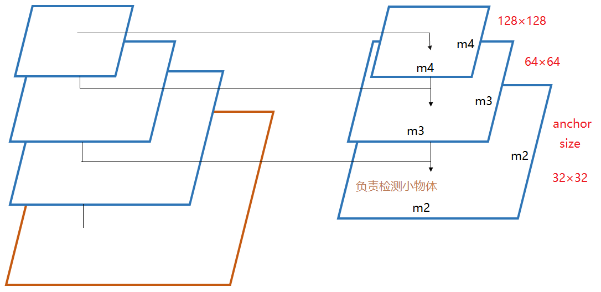

本文给出了对 FPN 网络的理解。
网络结构
常见的特目标测网络中特征的利用方式主要有 4 种
*(a) 图像金字塔，即将图像做成不同的 scale，然后不同 scale 的图像生成对应的不同 scale 的特征。这种方法的缺点在于增加了时间成本。有些算法会在测试时候采用图像金字塔。
(b) 像 SPP net，Fast RCNN，Faster RCNN 是采用这种方式，即仅采用网络最后一层的特征。
© 像 SSD (Single Shot Detecto) 采用这种多尺度特征融合的方式，没有上采样过程，即从网络不同层抽取不同尺度的特征做预测，这种方式不会增加额外的计算量。作者认为 SSD 算法中没有用到足够低层的特征（在 SSD 中，最低层的特征是 VGG 网络的 conv4_3），而在作者看来足够低层的特征对于检测小物体是很有帮助的。
© 本文作者是采用这种方式，顶层特征通过上采样和低层特征做融合，而且每层都是独立预测的。

图中，线越粗表示特征的语义程度越强。
与以往的方式不同，FPN 网络在 pyramid 的所有 level 上都进行预测。

FPN 网络的内部结构

自底向上其实就是网络的前向过程 (论文中使用的是 ResNet )。在前向过程中，feature map 的大小在经过某些层后会改变，而在经过其他一些层的时候不会改变，作者将不改变 feature map 大小的层归为一个 stage，因此每次抽取的特征都是每个 stage 的最后一个层输出，这样就能构成特征金字塔。
自顶向下的过程采用上采样进行，而横向连接则是将上采样的结果和自底向上生成的相同大小的 feature map 进行融合。在融合之后还会再采用 3*3 的卷积核对每个融合结果进行卷积，目的是消除上采样的混叠效应。并假设生成的 feature map 结果是 ，和原来自底向上的卷积结果 一一对应。
Feature Pyramid Network for RPN
FPN 可以用在 RPN 网络中，从而提高多尺度物体的检测性能。与 Faster R-CNN 中不同的是，FPN 在不同的 level 上使用 anchor， 上的 anchor 尺寸分别是 。可以看出，尺寸较大的 feature map 上的 anchor 的尺寸较小，适合用来检测小物体。

*关于 anchor 尺寸选取的个人理解。* RPN 网络的输入 feature map 在原图上的感受野是固定的，取决于此 featured map 相对于原图的尺寸缩小了多少倍。缩小的倍数越大，相邻感受野的中心距离越远（因为 feature map 尺寸越小，就需要用越少的感受野覆盖整张原图，因此相邻感受野的中心距离就会越远）。如果在尺寸较小的 feature map 上使用尺寸较小的 anchor 的话，相邻感受野的 anchor 可能会不重叠，从而漏掉物体。  但是在这种情况下选择较大尺寸 anchor 也会产生新的问题。当遇到小物体时，如果与大的 anchor 计算 IoU 时，IoU 可能较小，在生成样本时也会遇到问题。  可以看出，由于 feature map 尺寸较小，对应在原图上的感受野个数也较少，因而需要用较少的 anchor 来覆盖原图。若 feature map 的尺寸较大，则用来覆盖原图的感受野的个数较多，则每个 anchor 的尺寸就不用太大，因而可以更好地检测小物体。  可以看出，当 feature map 尺寸较大时，就可以用较小的 anchor 来覆盖原图，这样既不会出现 anchor 不相交从而漏检的情况，也不会造成小物体和 anchor 的 IoU 较小从而无法正确产生正样本的情况。
从以上分析可以得出结论，尺寸较大的 feature map 适合用来检测用来检测小物体，尺寸较小的 feature map 适合用来检测大物体。因此，FPN 的思想就是将各种尺寸的 feature map 结合起来，将大物体分配给小的 feature map 进行检测，将小物体分配给大 feature map 进行检测，从而提升检测性能。
总结
在 FPN 中，anchor 机制跟 Faster R-CNN 有所不同。FPN 产生了上文所述的 不同尺寸的 feature map，在一个 feature map 上只使用一个尺度的 anchor（Faster R-CNN 中为 3 个尺度）。在尺寸较大的 feature map 中使用尺度较小的 anchor，能够更好地检测小物体。
FPN 中有多个尺度的 feature map，每一个 feature map 作为输入进入一个 RPN。因此，有多少 feature map，就有多少 RPN。最后，将这些 RPN 的输出进行综合，得到所有的 proposals。
参考文章
https://blog.csdn.net/u014380165/article/details/72890275